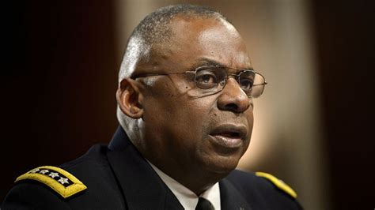

Military Extremism Memo
- 
As the Pentagon wrestles with concerns over right-wing extremism among service members, Defense Secretary Lloyd Austin has signed a memo directing commanding officers and supervisors to institute a one-day stand down within the next 60 days to address extremism within the nation's armed forces.
The Department of Defense announced Friday that Austin had formally signed the memo, which will require military leaders at all levels to select one day to lead discussions focusing on "the importance of our oath of office; a description of impermissible behaviors; and procedures for reporting suspected, or actual, extremist behaviors."
"We will not tolerate actions that go against the fundamental principles of the oath we share, including actions associated with extremist or dissident ideologies," the memo reads. "Service members, DoD civilian employees, and all those who support our mission, deserve an environment free of discrimination, hate, and harassment."
Austin writes in the memo that the stand down is the first step in "what I believe must be a concerted effort to better educate ourselves and our people about the scope of this problem and to develop sustainable ways to eliminate the corrosive effects that extremist ideology and conduct have on the workforce."
"We owe it to the oath we each took and the trust the American people have in our institution," the memo says.
The stand-down order was first announced by the Pentagon on Wednesday. The department said that Austin and the Chairman of the Joint Chiefs of Staff, Army Gen. Mark Milley, had met with civilian leaders and service chiefs to discuss the problem of extremism in the military — an issue that has come under growing scrutiny after the arrests of several current service members and veterans for the Jan. 6 storming of the U.S. Capitol.
According to the Pentagon, Austin said in the meeting that although the number of service members who adhered to such ideologies were small, they were "not as small as anyone would like."
"One of the challenges here and one of the reasons why he wants to do this is we don't know the full breadth and depth of it," Pentagon spokesman John Kirby said on Wednesday. Kirby noted that military personnel are prohibited from "actively advocating for and participating in supremacist, extremist or criminal gang doctrine, ideology or causes."
The prevalence of extremist and white supremacist ties among service members and veterans was expected to be an urgent issue for President Biden and Austin, who is the first Black man to lead the Pentagon.
A recent NPR analysis found that nearly 1 in 5 charged in the aftermath of the Capitol siege appeared to have a military history. Two weeks after the Capitol insurrection, roughly a dozen National Guard troops were dismissed from inauguration duties — at least two of whom for alleged links to extremism.
The challenge is not a new one. In 2019 a survey by The Military Times found that 36% of its active-duty readers surveyed had seen "evidence of white supremacist and racist ideologies in the military," up from 22% one year earlier.
Last year, there were 143 notifications of FBI investigations into current and former military members, with 68 pertaining to domestic extremism cases, a senior defense told NPR in January.
Source